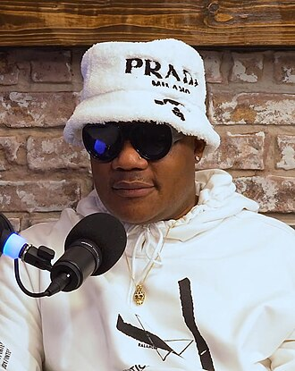

Sean Garrett
Garrett Robin Hamler, known professionally as Sean Garrett, is an American singer, songwriter, and record producer. He is known for his songwriting work on several mid-2000s R&B and hip-hop songs, beginning with Usher's 2004 single "Yeah!". The song peaked atop the Billboard Hot 100, along with five other songs he co-wrote—"Goodies" for Ciara that same year; "Check on It" for Beyoncé, "Run It!" for Chris Brown in 2005; "London Bridge" for Fergie, and "Grillz" for Nelly in 2006. In addition, he has co-written 17 other singles that peaked atop the UK Singles, US Hot R&B/Hip-Hop Songs, or Dance Club Songs charts. Garrett has been nominated for four Grammy Awards.
Complete Discography & Tracklists (6)
2008 Away (Dave Audé Club Remix International) 🎵 1 Tracks
2016 Look On Your Face (feat. Lil Yachty) 🎵 0 Tracks
No tracks registered.